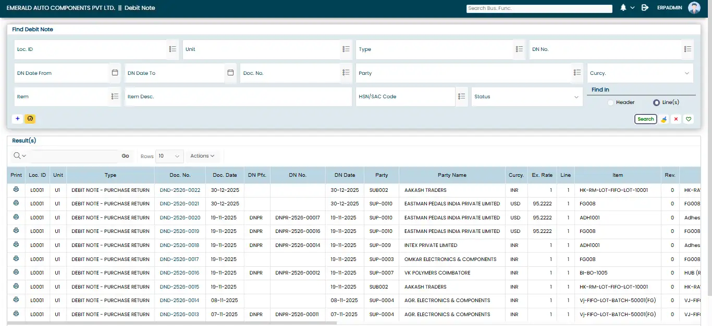
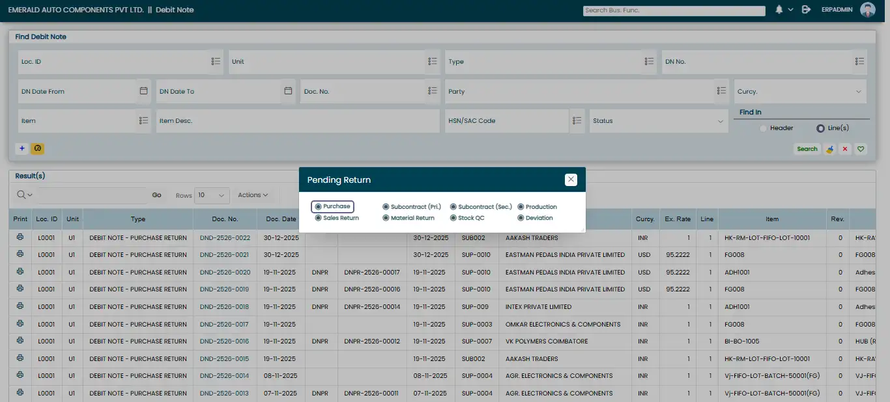
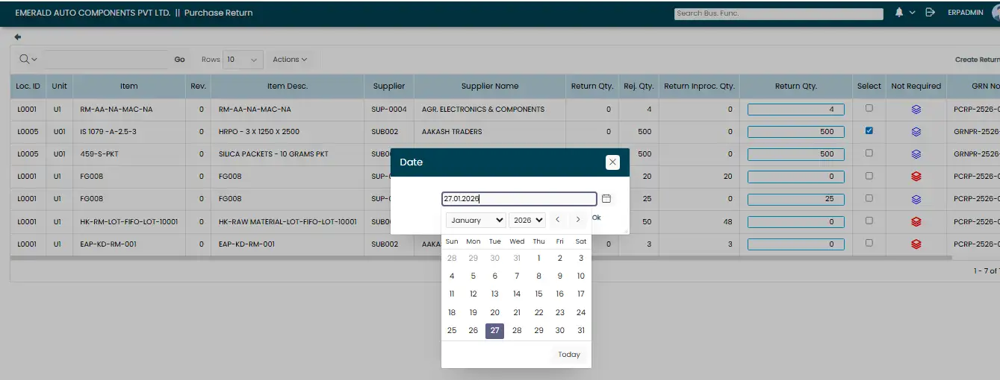
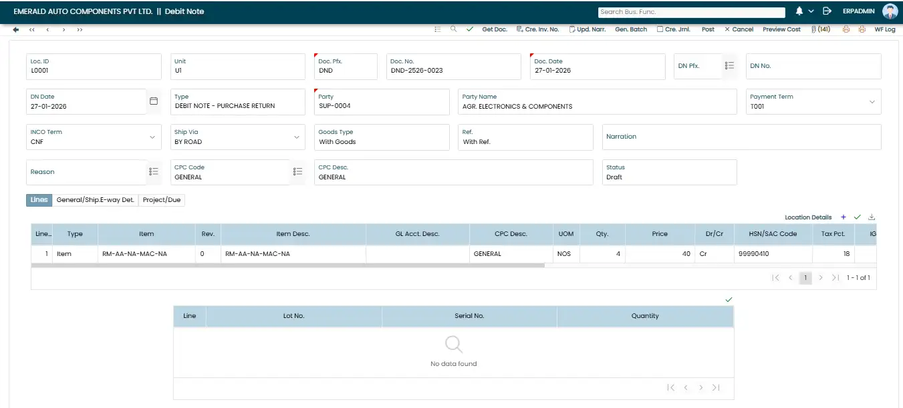
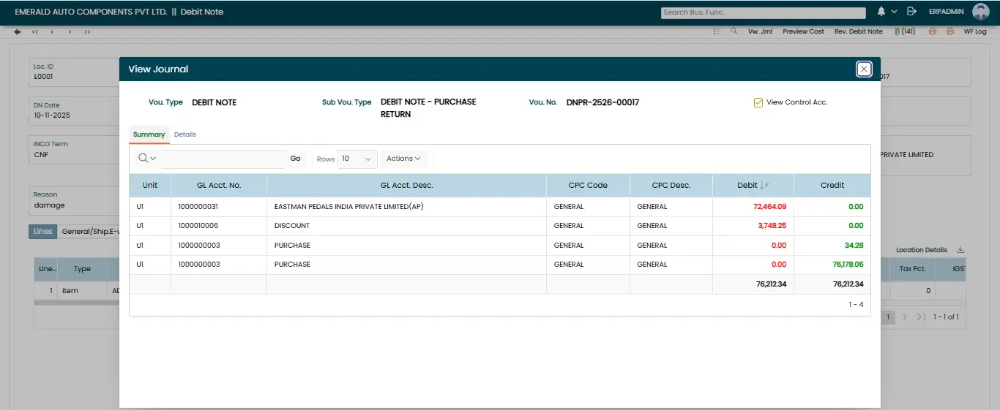

<div data-category="Purchase Order" data-title="Debit Note" data-updated="December 01, 2025" data-contributors="RoadmapIT" data-breadcrumb="Home,Purchase Order,Debit Note">
  <div class="page-content">
    <p>The items received from the supplier may sometimes need to be returned to the supplier if the quality is not satisfactory or bought in excess, etc. The Debit Note need to be raised against the Supplier Invoice, this action can be performed using Debit Note screen.</p>

    <h5>Navigation path:</h5>
    <p class="fs-6">Finance \ Transaction \ Party document \ Debit Note</p>

    

    <ul style="list-style-type: none; align-content: center">
      <li class="mouse-icon">Click Pending button and screen move to Pending Purchase Rejection.</li>
      <li class="mouse-icon">Search screen displays the list of Debit note with the relevant details and its status.</li>
      <li class="mouse-icon">Click on search to filter all the records.</li>
      <li class="mouse-icon">User can filter the respective documents by entering the search parameters at the header.</li>
      <li class="mouse-icon">Using search, system displays the results relevant to the search parameters entered.</li>
      <li class="mouse-icon">On click; the corresponding transaction record will be displayed.</li>
      <li class="mouse-icon">Using  icon, entered search parameters can be cleared.</li>
      <li class="mouse-icon">To close the screen, use <i class="bi bi-x-lg text-danger"></i> icon.</li>
      <li class="mouse-icon">
        By Clicking the
        <i class="bi bi-plus fs-4 mx-2 text-primary"></i>
        Add button we can create new debit note by entering all the mandatory fields displayed in the Add dialog.
      </li>
    </ul>

    

    <ul style="list-style-type: none; align-content: center">
      <li class="mouse-icon">Click radio button and control navigate to Pending purchase Rejection.</li>
    </ul>

    

    <ul style="list-style-type: none; align-content: center">
      <li class="mouse-icon">Select the document and Create Return.</li>
      <li class="mouse-icon">Choose the Doc date field and Click OK button.</li>
      <li class="mouse-icon">Document Created and Navigate to Debit note transaction screen.</li>
    </ul>

    

    <ul style="list-style-type: none; align-content: center">
      <li class="mouse-icon">Choose the Doc Prefix and Debit Note Prefix.</li>
      <li class="mouse-icon">Choose the Debit Note date and Doc Date.</li>
      <li class="mouse-icon">Choose the Reason from the LOV.</li>
      <li class="mouse-icon">Create Invoice No. and Create Journal.</li>
    </ul>

    

    <ul style="list-style-type: none; align-content: center">
      <li class="mouse-icon">Click view journal and check the Journal details.</li>
      <li class="mouse-icon">The Document will be sent for approval using the post button.</li>
      <li class="mouse-icon">The necessary work flow operations are done in the Workflow document control screen.</li>
      <li class="mouse-icon">To approve the document, Navigate to the Workflow approvals screen.</li>
      <li class="mouse-icon">The document can be cancelled using Cancel button, if required.</li>
      <li class="mouse-icon">
        Click View details
        <i class="bi bi-info-circle text-primary"></i>
        to view the specific document.
      </li>
      <li class="mouse-icon">Screen navigate into query screen to check the details.</li>
      <li class="mouse-icon">After click the close button document navigate into Approval screen.</li>
      <li class="mouse-icon">Choose the Approval/forward/Return button field and click Process button required process performed.</li>
    </ul>
  </div>
</div>
